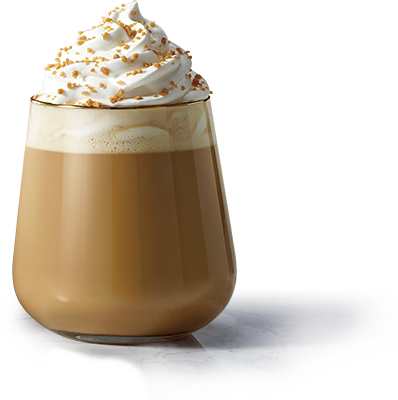
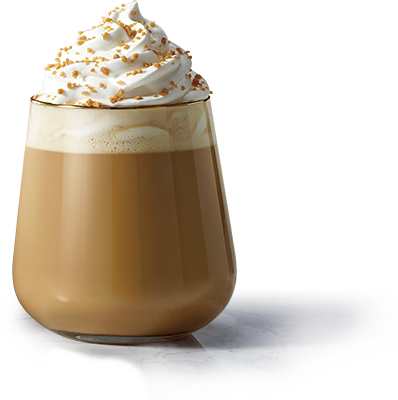

자주하는 질문
e-Gift Card에 대한 궁금점이 많으신가요? 고객님의 문의사항에 대한 답변을 빠르게 찾으실 수 있습니다.
- [온라인 스토어] 보낸 선물함이 사라졌는데, 과거에 선물한 이력은 어떻게 확인할 수 있나요?
- Gift배송하기 서비스에서 ‘배송지 입력’을 기준으로 주문내역이 노출되었던 것과는 달리, 온라인 스토어 서비스에서는 ‘결제’를 기준으로 주문내역이 노출됩니다. 따라서, 과거에 보내신 선물의 경우 스타벅스 앱 [Shop > 쇼핑하러 가기 > 마이페이지 > 주문내역]에서 확인하실 수 있습니다. 아울러, 스타벅스 온라인 스토어의 [선물함]에는 다른 사람으로부터 선물 받은 내역만 노출됩니다. - 주문내역: 결제한 주문 내역 (구매하기/선물하기) - 선물함: 선물 받은 내역 (선물받기)
- [온라인 스토어] 스타벅스 온라인 스토어에 들어가니 e-Gift Item과 e-Gift Card도 있는데, 결제 수단과 별 적립 기준이 모두 동일한가요?
- 스타벅스 온라인 스토어에서는 스타벅스의 상품을 온라인에서 구매할 수 있는 온라인 스토어 서비스, 스타벅스의 물품형 상품권을 선물할 수 있는 e-Gift item 서비스, 스타벅스의 금액형 상품권을 판매하는 e-Gift Card 서비스 총 3가지 서비스를 제공하며, 각 서비스의 결제수단과 별 적립 기준은 상이합니다. 각 서비스의 결제수단과 별 적립 기준은 서비스별 고지사항을 참조해 주세요.
- [e-Gift Card_발신] 최대 얼마까지 구매할 수 있나요?
- e-Gift Card의 계정당 일 최대 구매 가능 금액은 아래와 같습니다. - 신용카드: 50만 원 - SSGPAY: 50만 원 각 카드사의 상품권 한도 및 정책은 상이할 수 있습니다. e-Gift Card 결제수단별 월 구매 한도가 초과된 경우, 익일이용하시거나 ‘단체 및 기업 구매’를 통해 이용하시기 바랍니다.
- [단체 및 기업구매] e-Gift card MMS 발송 결과는 어떻게 확인하나요?
- 발송희망일 오후 5시에 신청자정보 상의 이메일로 발송결과 자동 메일이 발송됩니다. 단체 및 기업구매 e-Gift card는 개인 선물하기와 달리 통신사에서 최대 4일간 반복해서 발송을 시도합니다. 최종결과가 도출되고 발송 결과 상 실패가 있을 경우, 별도 안내 메일을 발송합니다. 단체 및 기업구매 > e-Gift card > 구매내역조회에서 발송 실패 건수를 확인하실 수 있으니 참고해주시고, 관련하여 문의가 있을 경우 담당자에게 구매번호 기재해서 메일 보내주시면 확인 후 회신 드립니다. 단체 및 기업구매 담당자 : starbucksb2b@starbucks.co.kr
- [단체 및 기업구매] e-Gift card를 대량구매 하고 싶은데 어떻게 해야하나요?
- 단체 및 기업구매 e-Gift card는 개인 선물하기 e-Gift card 와 달리 운영됩니다. e-Gift 매뉴얼을 확인하시면 구매조건과 유의사항, 구매방법 등이 상세히 안내되어 있습니다. 관련하여 추가 문의는 메일로 보내주시면 담당자가 확인 후 답변 드리겠습니다. e-Gift 매뉴얼 : http://www.starbucks.co.kr/upload/b2b/co_manual.pdf 단체 및 기업구매 담당자 : starbucksb2b@starbucks.co.kr
- [온라인 스토어] 구매당시에는 유효기간이 만료되지 않았던 상품권인데, 반품/취소 시점에 유효기간이 종료되었습니다. 어떻게 환불되나요?
- 제휴사 모바일 상품권 및 e-Gift Item을 사용한 경우, 당일 취소 시 모바일상품권을 원상복구해드립니다. 다만, 결제일 익일 이후 결제를 취소 또는 반품 시 해당 상품권의 유효기간이 경과되어 있을 수 있어, 이를 방지하고자 유효기간이 14일 이내로 남은 제휴사모바일상품권 및 e-Gift Item의 사용을 제한하고 있습니다. 아울러, 모바일상품권을 사용한 주문에 대한 반품 요청 시, 모바일상품권의 유효기간이 만료된 상태로 환불될 수 있다는 지점을 사전 고지하고 있습니다.
- [온라인 스토어] 스타벅스 온라인 스토어의 배송상품을 교환하고 싶어요.
- 상품을 직접 구매한 경우 변심으로 인한 상품 교환 및 상품 불량으로 인한 교환이 모두 가능하지만, 타인으로부터 받은 선물은 상품 불량시에만 교환 가능합니다. 다만, 선물 받으신 상품을 수령하실 배송지 입력 이전에는 상품의 옵션을 변경할 수 있으며, 선물 수령 이후 상품 불량으로 교환 시 동일 옵션의 상품으로만 교환 가능합니다. 배송완료 후 7일 이내라면 APP의 선물함에서 직접교환신청이 가능하며, 7일 이후에는 고객센터로 문의해주시길 바랍니다. 또한 선물을 받으실 때 배송지를 APP이 아닌 WEB브라우저에서 입력하여 비회원으로 수신하셨다면 교환신청은 구매자를 통해 신청 가능하니 구매자에게 문의하여 교환신청해 주세요.
- [단체 및 기업구매] e-Gift card 전체 또는 부분 환불하고 싶습니다.
- 전체 또는 부분환불은 결제일로부터 14일까지 가능합니다. 단, 발송된 e-Gift card의 금액이 정상적으로 충전취소 된 내역에 대해서만 환불이 가능합니다. 구매번호와 환불하고자 하는 내역 기재해서 메일 보내주시면 담당자가 답변 드리겠습니다.
- [단체 및 기업구매] e-Gift card를 이메일로 발송할 수 있나요?
- 단체 및 기업구매 e-Gift card는 MMS로만 발송이 가능합니다. 그에 따라 휴대전화 MMS 이외에 이메일이나 SNS 등으로 발송하는 서비스는 운영하지 않는 점 양지 바랍니다. 만약, e-Gift card 대량으로 구매할 경우, 구매자께서 직접 별도의 시스템을 이용하여 JPG파일을 첨부할 수 있다면 이메일이나 SNS로도 선물하실 수 있는 점 참고해주세요. e-Gift 매뉴얼 : http://www.starbucks.co.kr/upload/b2b/co_manual.pdf 단체 및 기업구매 담당자 : starbucksb2b@starbucks.co.kr
- [단체 및 기업구매] e-Gift card를 개인 정보가 아닌 회사명과 대표번호 등으로 변경해서 각 수신자에게 선물하고 싶은데 어떻게 해야하나요?
- 단체 및 기업구매 e-Gift card MMS로 구매신청하시면 발송처와 발신번호를 변경하여 e-Gift card를 선물하실 수 있습니다. e-Gift 매뉴얼 중 MMS 부분 확인하시기 바랍니다. 단체 및 기업구매 e-Gift card MMS는 발송 시간 예약은 불가하고, 항상 발송희망일 오전 10시에 발송됩니다. e-Gift 매뉴얼 : http://www.starbucks.co.kr/upload/b2b/co_manual.pdf 단체 및 기업구매 담당자 : starbucksb2b@starbucks.co.kr